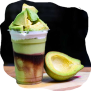

Blog
-

NEW CHILLS FOR SUMMER
By BaristaThis drink combines avocado and coffee, two of the trendiest ingredients out there right now! It’s creamy, sweet, and coffee-y, what’s not to like about this drink?
Read More -
Barraquito coffee
By BaristaBarraquito - the most famous coffee in Tenerife, with a taste that will always bring back memories of a sunny holiday! Barraquito is a type of multi-layered coffee that is specific to the Canary Islands and it can easily be found at most local coffee shops, or you can make it at home following our easy recipe.
Read More